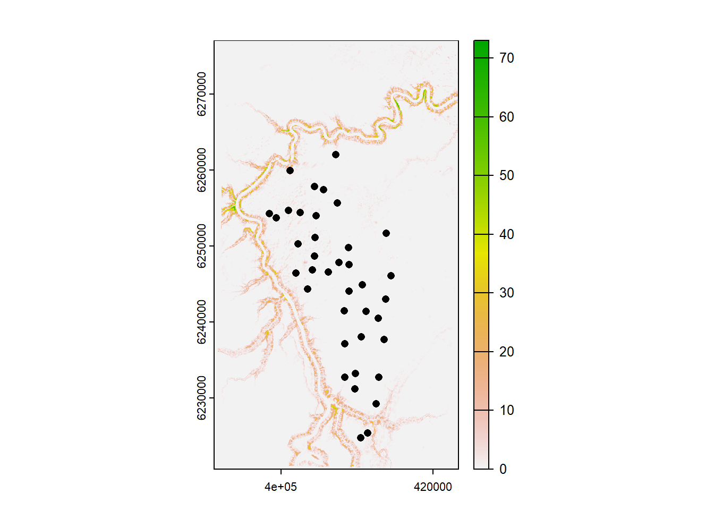
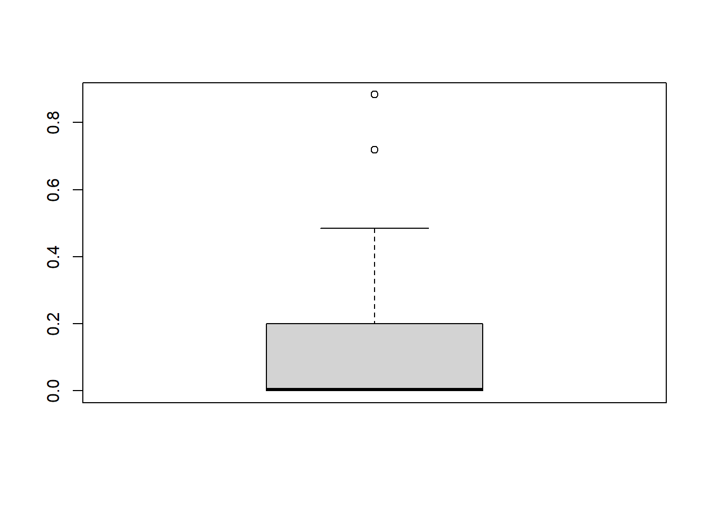
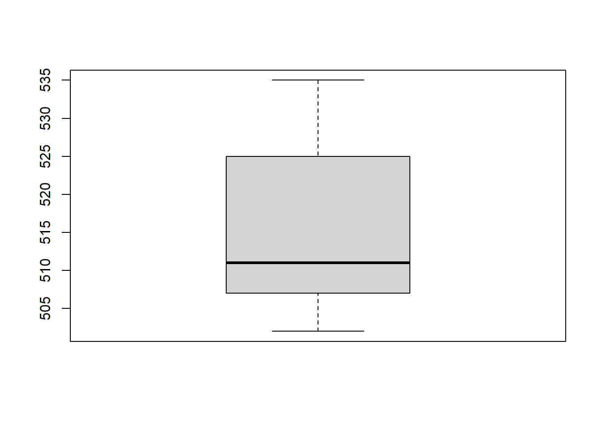
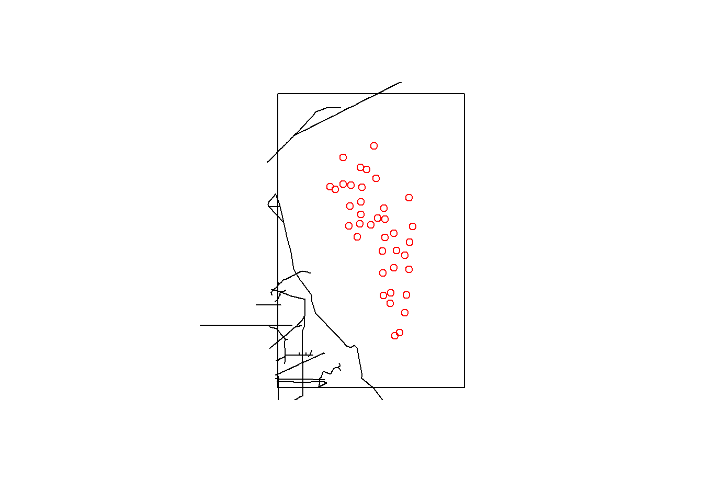
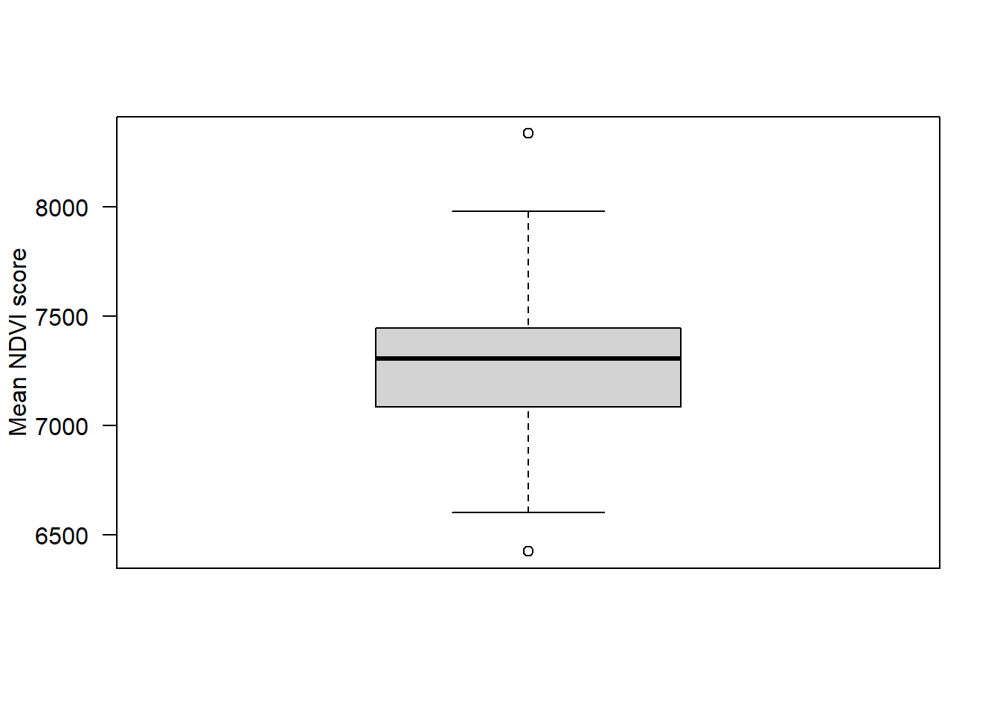
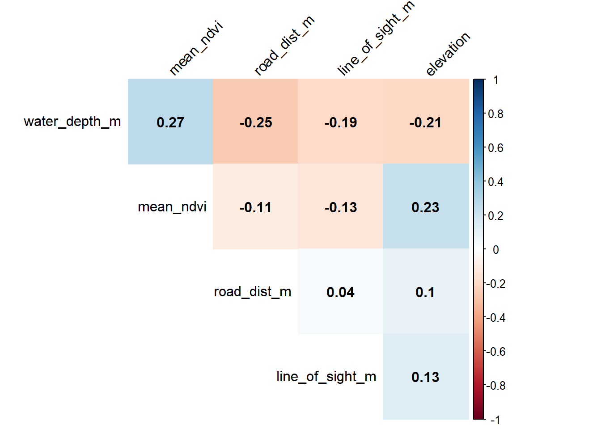

Chapter 7 Analysis covariates
Once we have created the building blocks for our data analysis dataframes, we must bring in the variables which will be used in the modelling steps. It is important to not that there are millions of ways to add covariates - both in terms of how you do it, and where you derive the data from. The covariates you use will depend on the questions you have, and the context of your survey. The examples provided here are not comprehensive and serve only as a guide!
Create a new .R script
Call it 02_example_covariates.R.
Load the required packages and read in the locations dataframe
library(kableExtra);library(dplyr); library(sf); library(MODISTools); library(lubridate); library(corrplot); library(terra); library(osmdata); library(elevatr)
# Locations data frame
locs <- read.csv("data/processed_data/AlgarRestorationProject_camera_locations.csv", header=T)7.1 Camera station covariates
It is common to have a suite of covariates which you would like to investigate the effects of in your datasets. These could take the form of habitat designations or treatment types. These may already be included with your deployment data, or you may need to derive them from a variety of remote sources. In their simplest form, these variable are time invariant (they do not change), however you may have variables which change through time as well (we discuss these at the end). In the following steps, we walk through the process of manipulating and deriving example covariates.
For the time invariant covariates, we will add them to our locs dataframe imported above.
7.1.1 Locally collected covariates
You may have collected some data in the field when deploying or checking your camera traps, and kept that data separate from your camera trap data (e.g. vegetation assessments). Provided that the naming convention you gave to these dataframes is the same as in your camera data (e.g. the location is in a column called placename) - you can do a ’left_join()` to merge the two datasets.
Import a sample set of local covariates and look at it:
# Import
local_covs <- read.csv("data/raw_data/example_covariates/example_dataframe.csv")
# Add it to you locations datafile
locs <- left_join(locs, local_covs) # From the dplyr package## Joining with `by = join_by(placename)`| placename | line_of_sight_m |
|---|---|
| ALG001 | 137.12500 |
| ALG002 | 131.52778 |
| ALG003 | 353.65833 |
| ALG004 | 158.04167 |
| ALG005 | 305.81944 |
| ALG006 | 60.12500 |
| ALG007 | 310.58333 |
| ALG008 | 112.75000 |
| ALG009 | 299.02778 |
| ALG010 | 102.30556 |
| ALG011 | 223.56944 |
| ALG012 | 140.91667 |
| ALG013 | 394.56944 |
| ALG014 | 196.87500 |
| ALG015 | 163.11111 |
| ALG016 | 116.11111 |
| ALG017 | 138.19444 |
| ALG018 | 304.29167 |
| ALG019 | 330.97222 |
| ALG020 | 204.40278 |
| ALG021 | 264.94444 |
| ALG022 | 229.13889 |
| ALG023 | 218.29167 |
| ALG024 | 425.43056 |
| ALG025 | 56.97222 |
| ALG026 | 200.05556 |
| ALG027 | 252.95833 |
| ALG028 | 277.50000 |
| ALG029 | 206.52778 |
| ALG030 | 43.38889 |
| ALG031 | 334.27778 |
| ALG032 | 83.00000 |
| ALG033 | 165.00000 |
| ALG034 | 337.79167 |
| ALG035 | 439.61111 |
| ALG036 | 62.69444 |
| ALG037 | 392.61111 |
| ALG038 | 352.75000 |
| ALG039 | 339.76389 |
| ALG040 | 182.75000 |
| ALG041 | 109.25000 |
| ALG042 | 219.56944 |
| ALG043 | 62.41667 |
| ALG044 | 374.26389 |
| ALG045 | 294.83333 |
| ALG046 | 34.50000 |
| ALG047 | 363.80556 |
| ALG048 | 392.93056 |
| ALG049 | 80.77778 |
| ALG050 | 139.36111 |
| ALG051 | 208.12500 |
| ALG052 | 13.95833 |
| ALG053 | 99.30556 |
| ALG054 | 35.47222 |
| ALG055 | 189.06944 |
| ALG056 | 55.41667 |
| ALG057 | 93.04167 |
| ALG058 | 80.91667 |
| ALG059 | 41.00000 |
| ALG060 | 189.90278 |
| ALG061 | 11.16667 |
| ALG062 | 16.00000 |
| ALG063 | 28.94444 |
| ALG064 | 34.27778 |
| ALG065 | 20.11111 |
| ALG066 | 36.94444 |
| ALG067 | 188.83333 |
| ALG068 | 72.27778 |
| ALG069 | 22.85556 |
| ALG070 | 28.61111 |
| ALG071 | 20.05556 |
| ALG072 | 52.44444 |
| ALG073 | 55.94444 |
It is a dataframe where the survey locations are rows and the local covariates, in this case line_of_sight_m, are columns.
We added this data to our station data using a left_join() operation from the dplyr() package. It uses a key variable which is common in both data frames to add data from the “right-hand side” to the rows in the “left-hand side” which are not already present. Any rows present in the right-hand side which are not in the left-hand side will be skipped.
For more examples of joins using dplyr() see: https://dplyr.tidyverse.org/reference/mutate-joins.html
7.1.2 Remotely collected covariates
To exploit remotely collected data sources we need to use the sf package to help us with spatial data.
Lets convert our “normal” dataframe to an sf dataframe:
# Convert
locs_sf <- st_as_sf(locs, # We specify the dataframe
coords=c("longitude", "latitude"), # The XY coordinates
crs=4326) # And the projection code
# Look
locs_sf## Simple feature collection with 38 features and 4 fields
## Geometry type: POINT
## Dimension: XY
## Bounding box: xmin: -112.6467 ymin: 56.15983 xmax: -112.3848 ymax: 56.49352
## Geodetic CRS: WGS 84
## First 10 features:
## project_id placename feature_type line_of_sight_m
## 1 AlgarRestorationProject ALG027 HumanUse 252.95833
## 2 AlgarRestorationProject ALG029 HumanUse 206.52778
## 3 AlgarRestorationProject ALG031 HumanUse 334.27778
## 4 AlgarRestorationProject ALG032 HumanUse 83.00000
## 5 AlgarRestorationProject ALG035 HumanUse 439.61111
## 6 AlgarRestorationProject ALG036 NatRegen 62.69444
## 7 AlgarRestorationProject ALG037 HumanUse 392.61111
## 8 AlgarRestorationProject ALG038 HumanUse 352.75000
## 9 AlgarRestorationProject ALG039 HumanUse 339.76389
## 10 AlgarRestorationProject ALG043 NatRegen 62.41667
## geometry
## 1 POINT (-112.4735 56.3328)
## 2 POINT (-112.5483 56.39474)
## 3 POINT (-112.482 56.30899)
## 4 POINT (-112.3968 56.40197)
## 5 POINT (-112.4761 56.38428)
## 6 POINT (-112.4058 56.23178)
## 7 POINT (-112.4449 56.27898)
## 8 POINT (-112.4792 56.27039)
## 9 POINT (-112.4094 56.30127)
## 10 POINT (-112.5842 56.38715)That weird header is important - it tells you the type of data you have (lines, points, polygons etc), and the projection information (CRS).
For more in depth information of sf functionality see: https://r-spatial.github.io/sf/articles/sf1.html
7.1.3 Extracting data from local rasters
Often we have raster data layers stored which we would like to link to our camera locations. We have included one such example here, a raster which reflects the depth from the soil surface to the water table - a proxy for habitat type in this study site. The layer comes from the 1m Wet Area Mapping (WAM) layer:
NOTE the raster has been down scaled to reduce its size for this course - it is no longer at 1m resolution.
The only time we deviate from the sf package is to deal with rasters. Raster objects in R are processed really slowly, especially if the raster is large. So instead we use the terra package.
library(terra)
# Import the example raster using the stars package
ras <- rast("data/raw_data/example_covariates/example_raster.tif")
# Covert your sf locations to the same projection as your raster then put it in terra `vect` format,
locs_terra <- locs_sf %>%
st_transform(crs=st_crs(ras)) %>% # change the projection to match the raster
vect() # Turn it into a terra object
# Plot the result
plot(ras) # The terra package makes nice raster plots with legends
plot(locs_terra, add=T) # Add the survey locations as black dots
Great! Now lets buffer our camera locations by 250 meters, and take the average depth to water for each location:
# Buffer by 250m
locs_terra <- buffer(locs_terra,250)
# Extract the values to a temporary object - tmp
tmp <- raster::extract(ras, locs_terra, fun=mean)
# Make a new column in locs_sf called water_depth_m
# They are ordered the same way so no need for a fancy join
locs_sf$water_depth_m <- tmp$Depth2WatAlgar
# Check the distribution of our data
boxplot(locs_sf$water_depth_m)
Most locations are on the water table (lowland sites), others are above it (upload sites), and they have different vegetation characteristics in the field.
7.1.4 elevatr package
Camera studies often occur over a range of elevations - and we can quickly extract these elevations using the elevatr package and an sf dataframe.
The src option specifies the sources of the DEM data. We use aws Amazon Web Service Terrain Tiles - which are available globally.
The z option specifies the resolution of the underlying DEM, the high the value, the more detailed it is. However, it will take longer to run so do not go crazy.
library(elevatr)
locs_sf <- get_elev_point(locs_sf,
src="aws", #Amazon Web Service Terrain Tiles - available globally
z = 12) # z specifies the zoom level, the lower the value the faster the code runs, but the coarser the elevation values are
# Plot the result
boxplot(locs_sf$elevation)
An elevation of ~ 500m was expected. Great!
If you want to download a full elevation raster for your area of interests, see the introduction to elevatr
7.1.5 Open Street Maps
Open Street Map (OSM) is an incredible resource for generating covariates for camera trap studies. For example, we might be interested in the distance to the nearest rivers, roads, or trails. All of these anthropogenic features are available in OSM!
CAREFUL OSM data is user contributed and often incomplete and patchy. Always plot your data and never assume it is complete without checking it first. For an example fo this see water bodies below.
First lets load the osmdata package.
The types of features we can extract using the osmdata package are listed here: https://wiki.openstreetmap.org/wiki/Map_features.
7.1.5.1 Highways
Camera trap projects are often interested in human disturbance, of which, highways are an important part.
Let’s start by defining our area of interest. All osmdata queries begin with a bounding box defining the area of the query:
# First buffer our points by 10km to create an area of interest (aoi)
aoi <- st_bbox(st_buffer(locs_sf, 10000)) # Units are in meters
# Return the features inside the bounding box
highway <- opq(aoi) %>% #using the bounding box
add_osm_feature(key="highway") %>% #extract all highway features
osmdata_sf() # convert them into simple features formatThe data you extract is its own “class” of data made up from multiple data types. The key thing is that it is made up of multiple data slices, each of which represents an sf dataset. Let’s take a look at three of these
- $osm_points
- $osm_lines
- $osm_polygons
Let’s use the lines element and add our camera stations, then calculate the distances to them:
# Create an index of the nearest object in `highway$osm_lines` to locs_sf
index <- st_nearest_feature(locs_sf, highway$osm_lines)
# Use that index to ask for the distance to that object
locs_sf$road_dist_m <- st_distance(locs_sf, highway$osm_lines[index,],
by_element=T) # Note `by_element=T` tells st_distance to evaluate things line by line.
# Plot the data
par(mfrow=c(1,1))
plot(st_as_sfc(aoi)) # st_as_sfc created a polygon from a `bbox` object
plot(st_geometry(highway$osm_lines), add=T)
plot(st_geometry(locs_sf), col="red", add=T)
st_nearest_feature gives us the index number of the feature which is closest to each station.
We can the use this to request the distance from that nearest feature to each camera station using st_distance. Which, put together, looks like:
7.1.5.2 water bodies
We also might want to calculate the distances to the nearest water body, and important resource for wildlife. We can do that using the following:
water <- opq(aoi) %>%
add_osm_feature(key="water") %>%
osmdata_sf()
# This time we will use the points file
index <- st_nearest_feature(locs_sf, water$osm_points)
locs_sf$water_dist_m <- st_distance(locs_sf, water$osm_points[index,], by_element=T) # Note `by_element=T` tells st_distance to evaluate things line by line. For more examples of using the osmdata package see: the projects github page
7.1.6 Vegetation productivity
7.1.6.1 MODISTools
MODIStools is an R interface to the MODIS Land Products Subsets web services. It allows for easy access to ‘MODIS’ time series directly to your computer! These are the data layers commonly used to extract normalized difference vegetation index (NDVI) and Enhanced Vegetation Index (EVI) information. When using MODIStools you should reference:
Hufkens (2022). The MODISTools package: an interface to the MODIS Land Products Subsets Web Services
Also click that link for more details on how to use it.
Two commonly data products are MOD13Q1 for the derivation of NDVI/EVI, and MOD15A2H for the derivation of leaf area index (LAI).
Let’s load the package and get it into the right format:
library(MODISTools)
# Select the location data and put it into the format MODIS tools expects
modis_locs <- locs %>%
select("placename", "longitude", "latitude") %>%
rename(site_name=placename, lat=latitude, lon=longitude)
# Download some NDVI data
site_ndvi <- mt_batch_subset(product = "MOD13Q1",
df=modis_locs,
band = "250m_16_days_NDVI",
start = "2019-07-01",
end = "2019-08-31",
km_lr = 0, # Use these options if you want to buffer the value (km left)
km_ab = 0, # Use these options if you want to buffer the value (km above)
internal = TRUE)Lets simplify the output to the key elements of information and rename them to match our camera data where appropriate:
# Reduce the number of columsn in the output and rename it where required.
ndvi_simple <- site_ndvi %>%
select( site, band, calendar_date, value) %>%
rename(placename=site)
# Take the average for each location
tmp <- ndvi_simple %>% #Take the NDVI layer
group_by(placename) %>% # Group observations by the placename
summarize(mean_ndvi=mean(value)) # Take the mean of the values and call the new column `mean_ndvi`
# Add the new data to our locations dataframe
locs_sf <- left_join(locs_sf, tmp)
# Plot the results
boxplot(locs_sf$mean_ndvi,
ylab="Mean NDVI score",
las=1)
It is possible to generate an NDVI score for each month that each camera is active, however that would take too long to produce for this course!
7.2 Convert and save your covariates
# Convert columns to numeric
locs_sf$road_dist_m <- as.numeric(locs_sf$road_dist_m)
# Convert it back to a dataframe
locs_sf$geometry <- NULL
locs <- left_join(locs, locs_sf)
# Write the dataset
write.csv(locs, paste0("data/processed_data/", locs$project_id[1],"_camera_locations_and_covariates.csv"), row.names=F)7.3 Correlations between predictors
So we have used a variety of different techniques to generate covariates for our subsequent analyses. However, it is important to note that we cannot just through these variables into a model.
One way to check if your different variables are confound/correlated is using the corrplot package.
library(corrplot)
# First we need to create a correlation matrix between the different variables of interest
M <- cor(locs[, c("line_of_sight_m", "water_depth_m", "elevation",
"road_dist_m", "mean_ndvi")])
corrplot(M, #The correlation matrix we made
method="color", # How we want the cells
type="upper", # Just show the upper part (it is usually mirrored)
order="hclust", # Order the variables using the hclust method
addCoef.col = "black", # Add coefficient of correlation
tl.col="black", tl.srt=45, # Control the text label color and rotation
diag=F # Suppress the diagonal correlations (which are 1 anyway)
)
The cells denote pairwise correlations between the rows and the columns. The great thing about corrplot is customization option are near endless - see the corrplot vignette.
In general there is very low correlation between our different predictors! If we were seeing pairwise correlations >0.7 we perhaps wouldn’t include those in the same model.